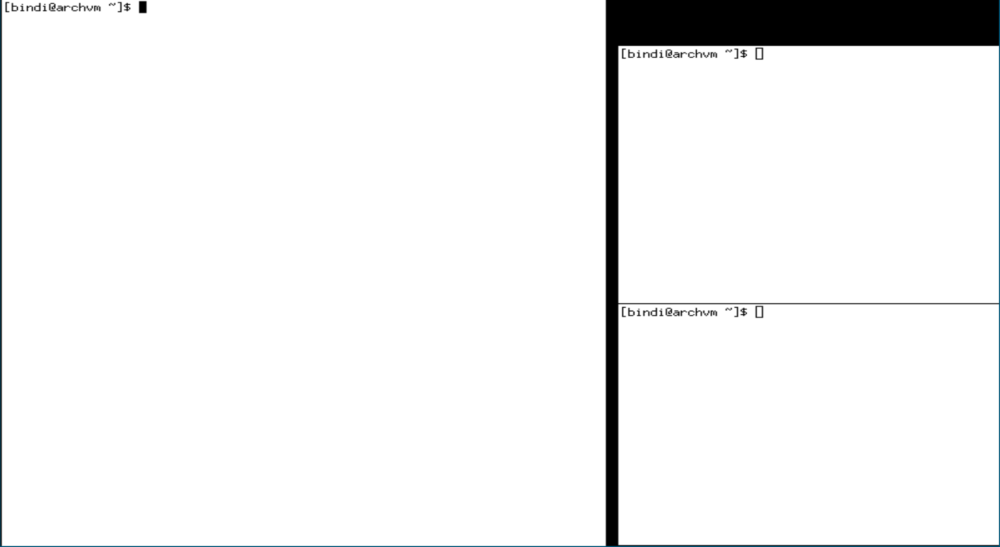
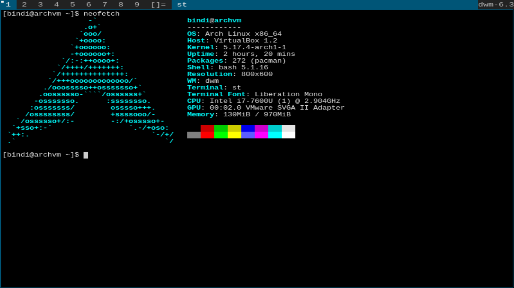
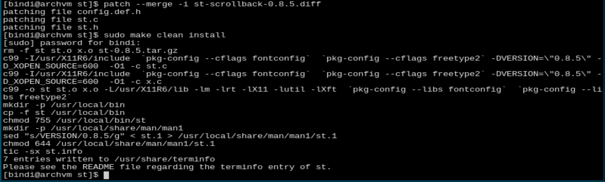
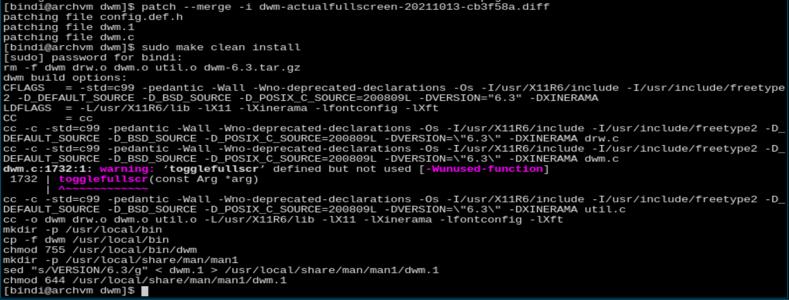
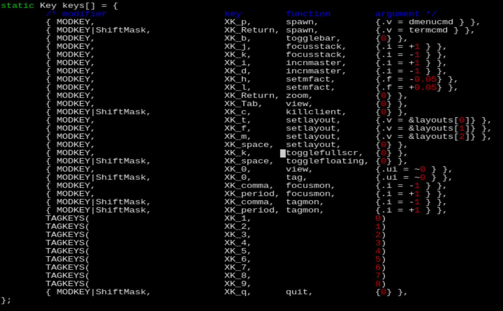

Starting with Xorg we will need to install the packages xorg xorg-server xorg-apps xorg-xinit and xterm (for testing only). After installing all the packages we should be able to run the
startx command and see the following screen with three terminals:

Now simply write exit and hit enter to get back into the tty. Nice first step done, we got a display server!
Next up is dwm and st. First we need to clone them from the officall repositories with git. If git is not installed on your system you can just download the package git. Once you have git installed create a folder where you want to store the source code of your window manager and terminal. I'll call it .suckless and then let's change into that directory. Now it's time to clone the repositories. Simply type
git clone git://git.suckless.org/dwm and git clone git://git.suckless.org/st.
Also install dmenu and the font family ttf-liberation with pacman.
Afterwards swtich in the dwm directory and do a sudo make clean install. Do the same for st.
Now edit or create the file .xinitrc and add a line with dwm. Now you can use startx to start the display server and dwm.
Use ALT+SHIFT+ENTER to run st. For a list of all the default keybindings check the config.h or go to this cheatsheet.

Great now the barebones is installed and ready to go! Now let's get to patching. First we'll enable scrolling for our terminal.
Go to the patches site on suckless and download the newest version of st-scrollback. Save the .diff file into your st folder. Then use patch --merge -i st-scrollback-x.x.x.diff to patch st.
Now just do sudo make clean install again.

Congrats, you have successfully patched st. Now you can scroll with SHIFT+PageUp/PageDown after restarting st.
Now let us patch dwm aswell. We will add the actuallfullscreen patch. Again save the .diff into the dwm folder and patch it just like we did with st. After making you will see the following warning:  Now we have to edit the config.h file. Add the line
{ MODKEY, XK_k, togglefullscr, {0} },to
keys[].
It should look something like this: (i added it in the middle)

Finally recompile with a sudo make clean install and restart dwm (use ALT+SHIFT+Q to quit dwm and then run startx).
Now you can toggle fullscreen with ALT+k.
Thats it for this blog post! I hope i could help with getting you started with suckless software. Now it's up to you to switch up the keybindings and customize more!
I might make another entry for customization options such as fonts, the statusbar or how to launch software with a keybinding! So stay tuned!